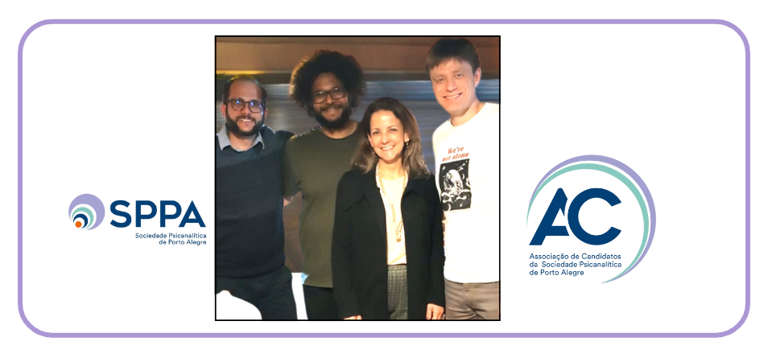

Associação de Candidatos apresenta sua nova diretoria
- 
 Falta legenda
Falta legenda
Na reunião geral do dia 18 de julho de 2024, tomou posse a nova gestão da Associação de Candidatos da Sociedade Psicanalítica de Porto Alegre (AC/SPPA). A atual administração, composta pelo presidente Gustavo Bortoluzzi, pelo secretário Pedro Victor Santos, pela tesoureira Cristina Horta e pelo representante dos egressos Rafael Giordani, tem como intuito manter os já tradicionais eventos do calendário científico da AC, permanecendo em sintonia com o Instituto de Psicanálise da SPPA. Entre os objetivos da diretoria, encontra-se seguir promovendo a integração de seus membros, incentivando-os a permanecerem em contato ativo junto ao quarto eixo da formação psicanalítica.
No mês seguinte à eleição, a AC teve a oportunidade de participar do evento “SPPA Portas Abertas”, atividade que se caracteriza por apresentar a Instituição e o funcionamento da formação psicanalítica a possíveis novos candidatos e interessados na psicanálise em geral. Juntamente com demais membros do Instituto, foi possível expor o papel da AC dentro da estrutura institucional, bem como esclarecer questionamentos e demais demandas dos presentes.
Ao final de agosto, a Associação de Candidatos desfrutou do privilégio de realizar uma atividade de supervisão com o renomado psicanalista Dr. René Roussillon. Após o ciclo de conferências do autor ter sido adiado devido à catástrofe climática que se abateu sobre o Rio Grande do Sul, o evento finalmente ocorreu, atendendo às expectativas dos ouvintes. Foi o momento de apreciar o pensamento de um dos maiores expoentes da psicanálise contemporânea, reconhecido mundialmente por sua expertise teórica e técnica. O instigante material clínico trazido pela colega Luciane Vargas foi debatido e pormenorizado pelo Dr. Roussillon, que proporcionou um ambiente acolhedor ao diálogo entre os participantes, além de certamente enriquecer e ampliar o conhecimento de todos.
O início do segundo semestre foi marcado por reuniões altamente relevantes e significativas, contando com a destacada assiduidade dos associados nos encontros. Tal atitude mostra o interesse e zelo institucional dos pares, fortalecendo o vínculo fraterno presente no convívio do grupo. As atividades seguem dentro da programação ajustada, e a AC procurará permanecer constantemente próxima dos colegas a fim de se manter atenta às sugestões e colocações de seus componentes, buscando aprimorar e difundir a arte da psicanálise.